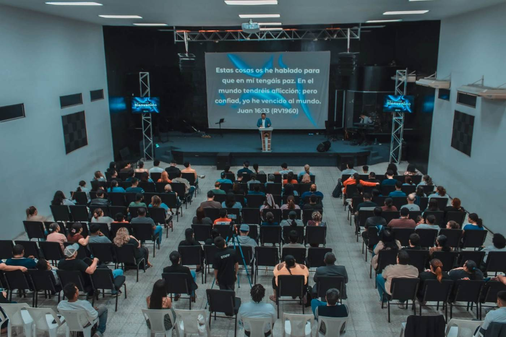
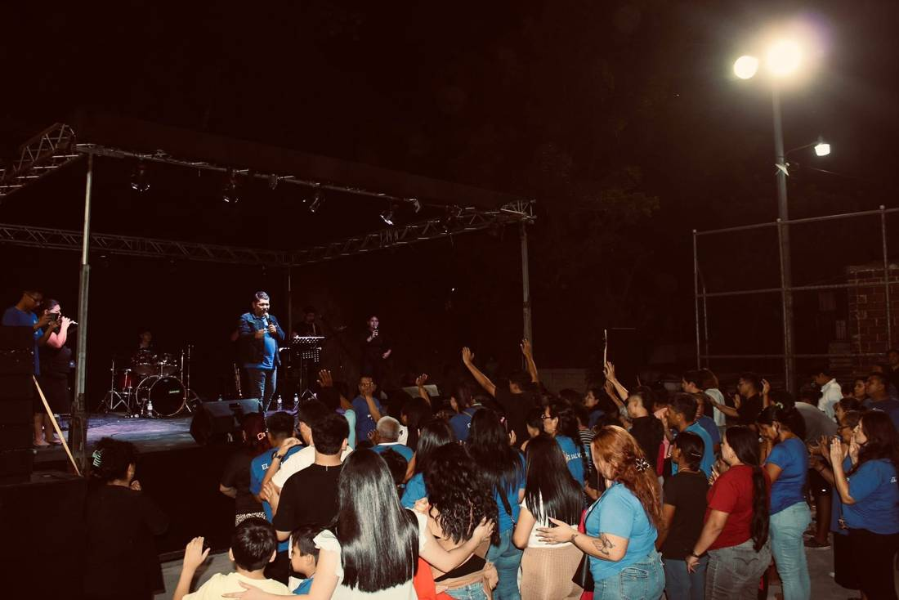
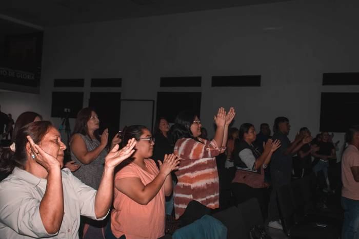

Horarios
Próximos servicios
Domingos
8:30 AM · 11:30 AM
Dos servicios: Sobrenatural
Jueves
6:30 PM
Jueves de Avivamiento
Una iglesia.
Una familia.
Un propósito.

Nuestro ministerio
Conoce a nuestro ministerio
Somos una familia que se reúne para adorar, aprender la Palabra y servir en la visión que Jesús nos dejó. Nuestros pastores te invitan a ser parte de lo que Dios está haciendo en esta casa.
Pastor Omar Marinero
Pastora Claudia de Marinero
Actividades
Lo que está pasando en Río de Gloria
Galería
Vive la experiencia


Primera visita
¿Nos visitas por primera vez?
Dónde estamos
19 Calle Poniente, entre 1 y 3 Avenida Norte, #232. Barrio San Miguelito, San Salvador.
Cuándo
Domingos 8:30 AM y 11:30 AM
Jueves 6:30 PM
19 Calle Poniente #232, San Miguelito
Cómo llegar →Redes